FlowBackTest · rendered preview
Genuine desktop and mobile captures. All product examples are synthetic. 12 October 2026.
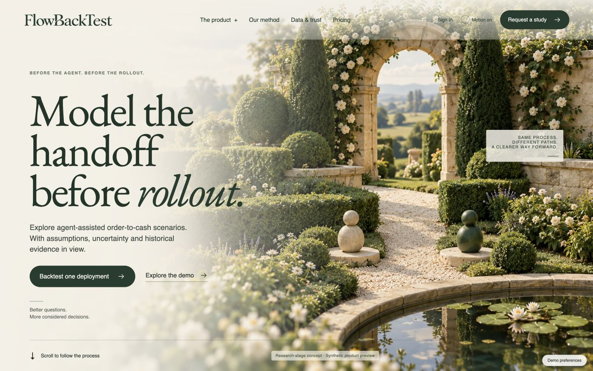
Garden homepage hero/ · 1440 × 900px · garden-hero.webp; Returning Wordmark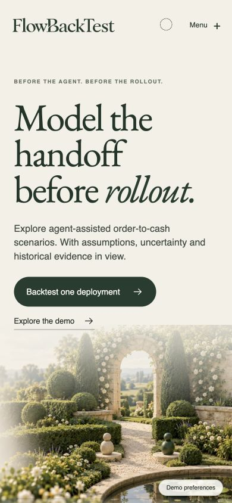
Responsive garden homepage hero/ · 390 × 844px · garden-hero-900.webp; Returning Wordmark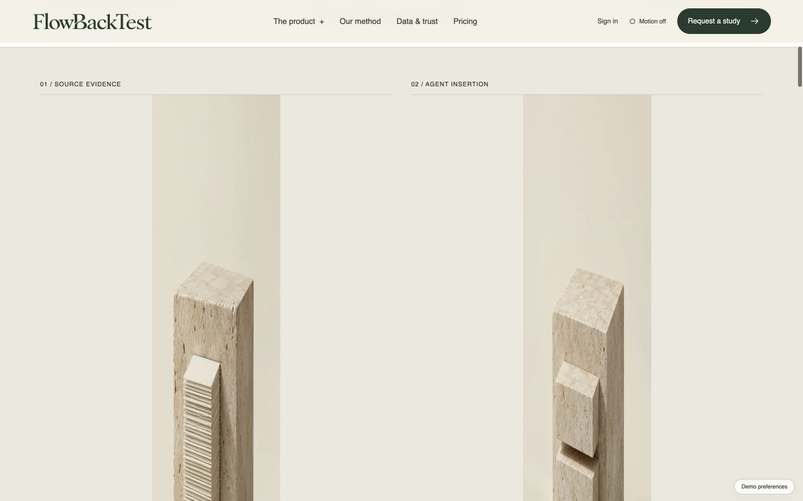
Four process chapters in Motion off mode/#journey · 1440 × 900px · cloister-source/triage/human-review/release.webp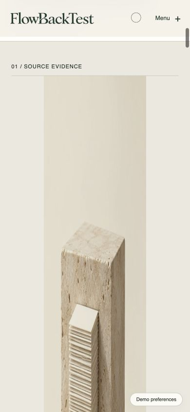
Stacked source chapter/#journey · 390 × 844px · cloister-source.webp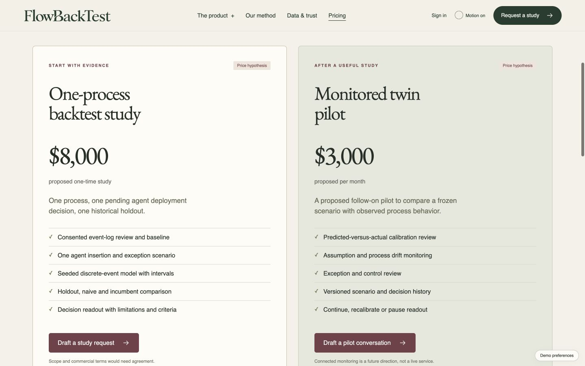
Both hypothetical study and pilot prices/pricing · 1440 × 900px · Native HTML/CSS pricing cards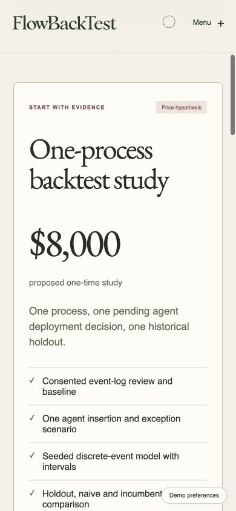
Stacked study hypothesis price/pricing · 390 × 844px · Native HTML/CSS pricing cards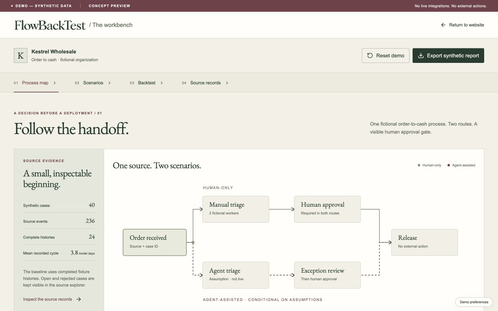
Persistent synthetic boundary and process workbench/demo/map · 1440 × 900px · Native UI; src/fixtures.js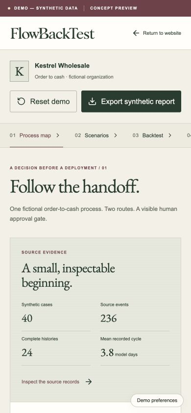
Responsive synthetic boundary and fixture summary/demo/map · 390 × 844px · Native UI; src/fixtures.js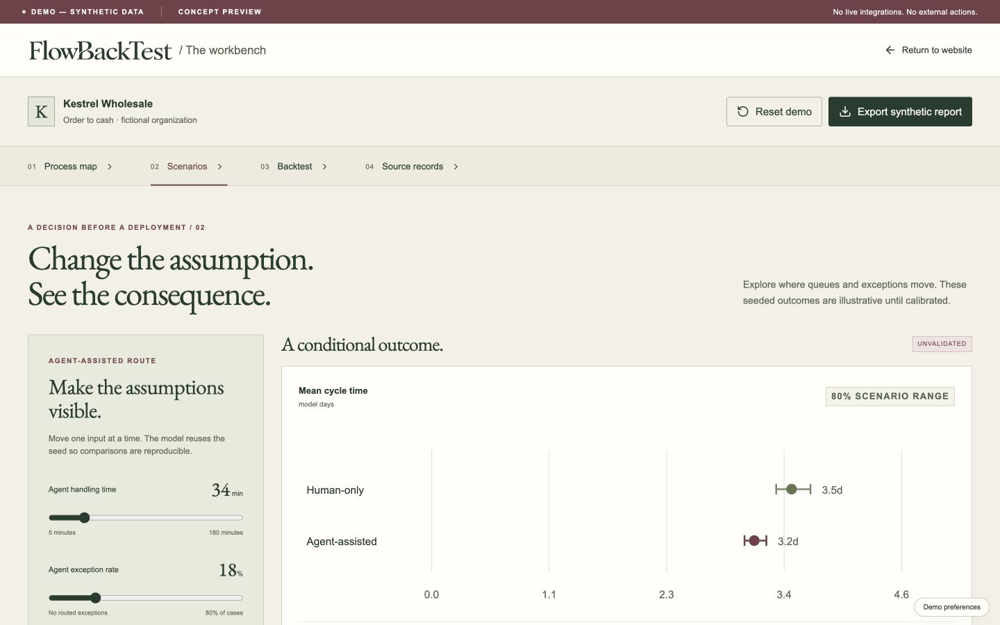
Seeded scenario controls and uncertainty chart/demo/scenarios · 1440 × 900px · Native SVG/HTML; src/simulation.js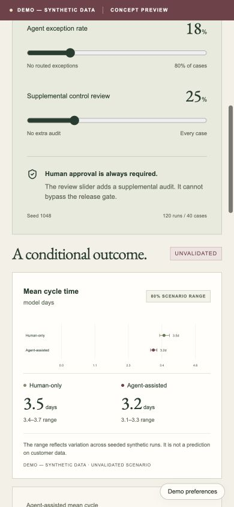
Narrow conditional outcome chart and human gate/demo/scenarios · 390 × 844px · Native SVG/HTML; src/simulation.js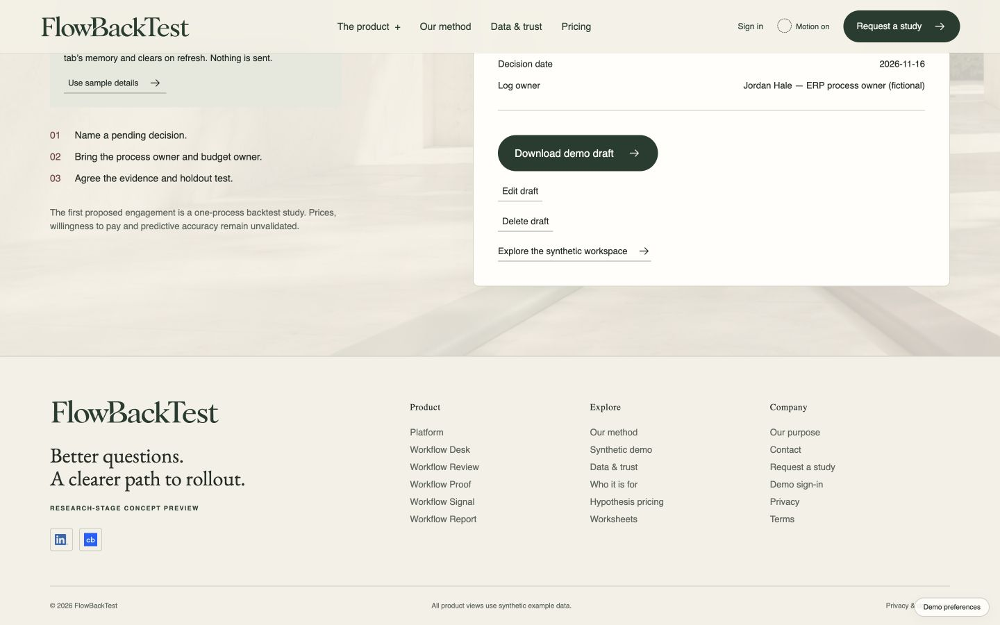
Local draft success; nothing submitted/study · 1440 × 900px · Native form; fictional example values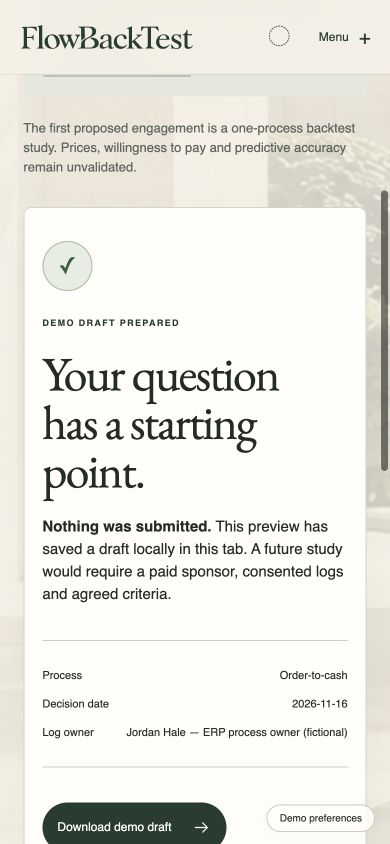
Responsive local draft success/study · 390 × 844px · Native form; fictional example values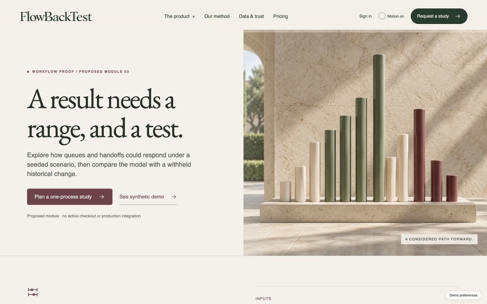
Workflow Proof · 1440 × 900px · cloister-workflow-proof.webp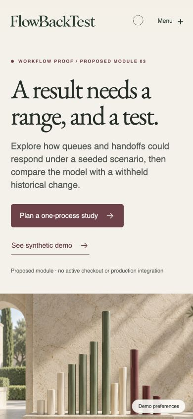
Workflow Proof · 390 × 844px · cloister-workflow-proof.webp